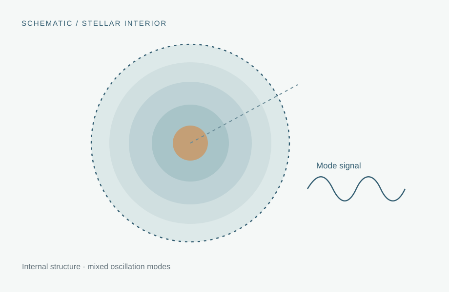

03 / Stellar astrophysics
Stellar evolution & asteroseismology
Probing stellar interiors by combining evolutionary models with the rich frequency spectra of stellar oscillations.

01 / Overview
Overview
I work with stellar evolution and pulsation calculations to investigate oscillation spectra in evolved stars. Particular interests include mixed pressure–gravity modes, gravity-mode period spacings, and how interior mixing affects observable seismic diagnostics.
02 / Background
Scientific context
Asteroseismology extracts information about otherwise inaccessible stellar interiors from their natural oscillation frequencies. For red giants, mixed modes combine sensitivity to the acoustic envelope and deep radiative interior, allowing constraints on internal structure and evolutionary state.
03 / Motivation
Research questions
- How do mixed-mode spectra respond to structural changes during red-giant evolution?
- What can dipole period spacings and phase offsets reveal about stellar interiors?
- How can sharp structural gradients and overshooting affect mode patterns?
04 / Approach
Methods & techniques
Evolution modeling
Evolve stellar models and examine their interior profiles with MESA.
Oscillation calculations
Compute eigenfrequencies and mode properties with GYRE.
Seismic analysis
Analyze mixed modes, gravity-mode period spacing, mode coupling, and frequency-dependent fitting of oscillation patterns.
05 / Progress
Project notes
The workflow joins MESA evolutionary snapshots with GYRE mode calculations and diagnostic plots. We will add selected propagation diagrams and mode-spectrum comparisons when ready.
06 / Supporting material
Figures & research outputs
Add the best propagation diagram, period-échelle view, or ΔΠ₁ diagnostic from the project.
Image or publication to be addedPublication links, posters, and code repositories will appear here once they are selected and approved for sharing.